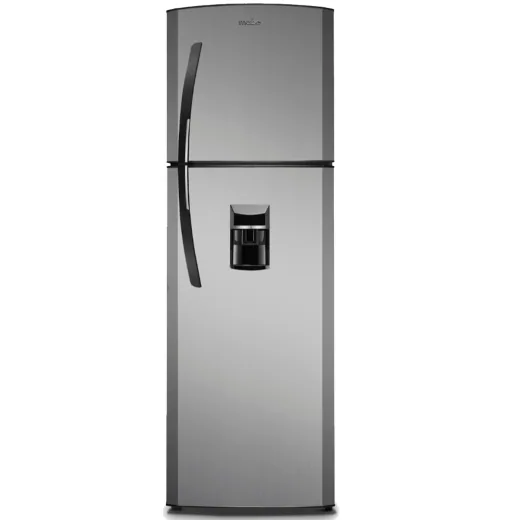
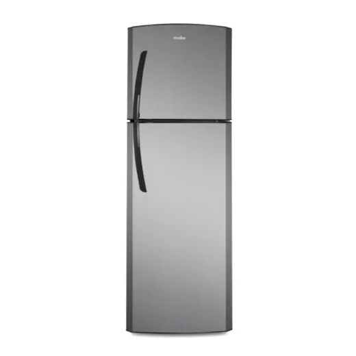
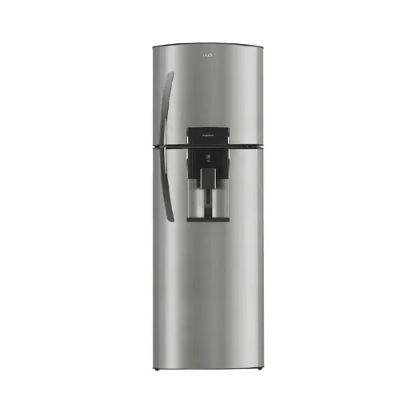
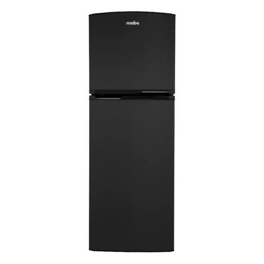

Inicio › Refrigeradoras y congeladores

Mabe · Modelo RMA1250PJCAU
Refrigeradora Mabe · 9 pies · Top Mount · RMA1250PJCAU
L 10,997
Más barato en La Curacao · ahorras hasta L 802 frente a la tienda más cara
Precio en cada tienda
| Tienda | Precio | Antes | Disponibilidad | |
|---|---|---|---|---|
| La Curacao | L 10,997 | Disponible | Ver en tienda › | |
| Elektra | L 11,799 | Disponible | Ver en tienda › |
Precios referenciales tomados de cada tienda el 28 de noviembre de 2026. El precio válido es el que muestra la tienda al comprar.
Historial de precio
Lo seguimos desde el 1 de noviembre. Precio más bajo registrado: L 10,997 en La Curacao (9 de noviembre), igual que hoy. Cambios de precio registrados: 1.
Características
| Tamaño (Pies) | 10 |
|---|---|
| Bono | 1000 |
| Modelo | RMA1250PJCAU |
| Tipo | Refrigeradora de Piso (Top Mount / Congelador superior) |
| Capacidad Comercial | 10 Pies Cúbicos (250 Litros) |
| Tecnología de Enfriamiento | Frío Seco (No Frost / Automático) |
| Organización (Enfriador) | • Parrillas de Cristal Templado (2 o 3, ajustables |
Descripción
La refrigeradora Mabe de 10 pies RMA1250PJCAU es una opción de buen tamaño para mantener los alimentos frescos de una familia, sin ocupar demasiado espacio en la cocina. Mabe es una marca reconocida en electrodomésticos, lo que respalda la calidad de esta refrigeradora Mabe.
Tecnología Clave: Home Energy Saver (Ahorro de hasta 25% de energía).
Diseño Exterior: 2 Puertas, Acabado Inoxidable (o Platinum), Jaladera tipo Pocket (empotrada).
Dispensador: Dispensador de agua exterior (capacidad de 2 Litros).
Otros refrigeradoras y congeladores Mabe
 Refrigeradora Mabe · 9 piesL 10,499.01En Lady Lee
Refrigeradora Mabe · 9 piesL 10,499.01En Lady Lee
Refrigeradora Automática Mabe 9CP RMA1250FACAEL 10,495En Gallo más Gallo
Refrigeradora Mabe · 11 pies · Top Mount · RMA1300FHCAEL 11,795En 3 tiendas · más barato en Gallo más Gallo
Refrigeradora Mabe · 11 pies · Top Mount · RMA1300FXCAUL 11,997En La Curacao
Refrigeradora Mabe · 8 pies · RMA1230PVCAG1L 9,990En 2 tiendas · más barato en Diunsa Refrigeradora Mabe · 14 pies · Top Mount · RMC400FVCAEL 12,490En 2 tiendas · más barato en Diunsa
Refrigeradora Mabe · 14 pies · Top Mount · RMC400FVCAEL 12,490En 2 tiendas · más barato en Diunsa Refrigeradora Mabe · 13 pies · Top Mount · RMP370JCATL 12,995En 5 tiendas · más barato en Gallo más Gallo
Refrigeradora Mabe · 13 pies · Top Mount · RMP370JCATL 12,995En 5 tiendas · más barato en Gallo más Gallo Refrigeradora Mabe · 9 pies · Top Mount · RMA1230PVCAEL 8,997En 2 tiendas · más barato en La Curacao
Refrigeradora Mabe · 9 pies · Top Mount · RMA1230PVCAEL 8,997En 2 tiendas · más barato en La Curacao